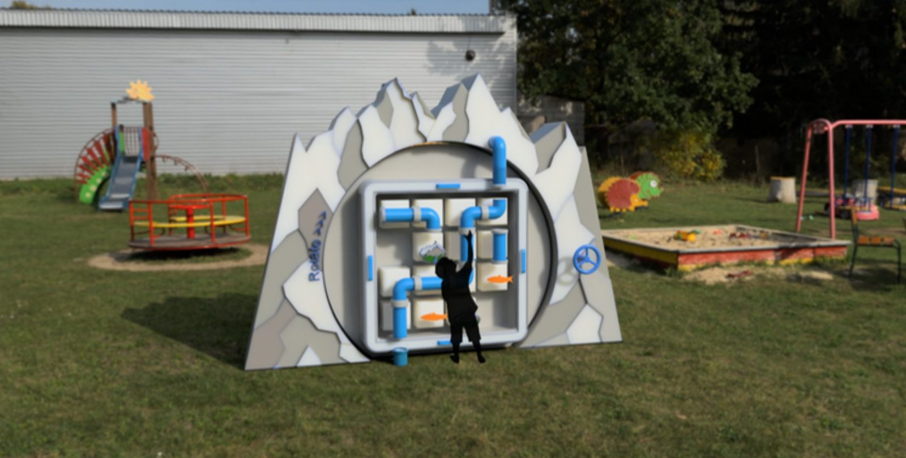
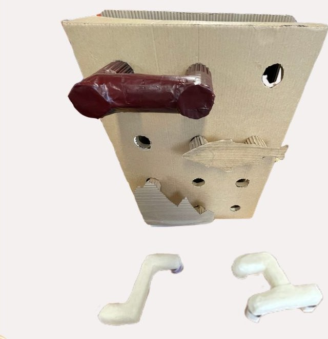
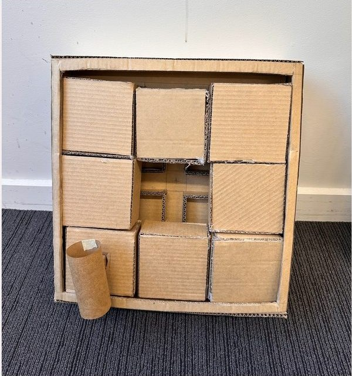
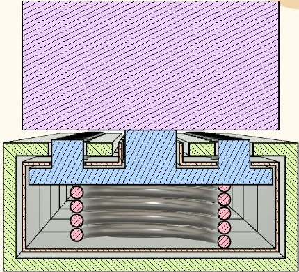
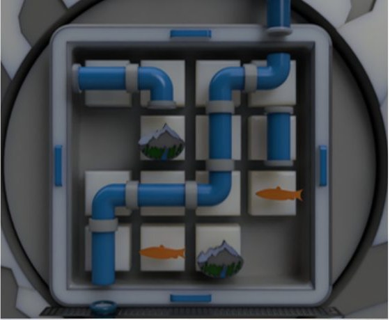

v1 pipe wall
The champion concept: a wall of sockets for loose pipes and obstacles. Dropped after feedback about climbing, confusion and lost parts.
A playground puzzle where kids slide pipe blocks to route water to a turbine, learning how Twizel's hydro scheme makes power.

Design a new piece of play equipment that lets users engage with the history or meaning of a real place.
We chose Twizel, founded in 1968 to house the workers building the Upper Waitaki hydroelectric scheme: 50 km of canals, 2 dams and 4 powerhouses. It was only meant to be temporary.
Our north star: a high-end, sustainability-inspired piece of play equipment that teaches through challenge and collaboration, explaining hydro power to kids aged 7–10.
We visited three Christchurch playgrounds (Hansons Reserve, Milnebank Reserve and Margaret Mahy) and rated each one for play flow, age range, safety and accessibility. We also used the equipment with our eyes covered to understand what it's like for visually impaired children. Margaret Mahy's water play scored highest, showing how complex ideas can be taught through simple, hands-on pieces.
The gaps we found: little inclusivity, few sustainable materials, and play kept separate from learning. That pointed us toward modular, interactive equipment that mixes physical play with science.
Our first concept was a wall with sockets. Kids would plug in loose pipe pieces and obstacles to guide water from a reservoir to a turbine. We prototyped part of it in cardboard to test pipe shapes, grip and socket fit.
User feedback changed everything: kids would try to climb the wall, the goal wasn't clear, and loose parts would go missing. We rewrote the brief around a clear goal, safe height, no removable parts and easy reset.
Next came a 6 × 6 grid of sliding pipe blocks, like a slide puzzle. It solved the loose parts problem, but 36 squares was too complex, and a solved board was hard to reset. So we cut it to 4 × 4 and made the whole grid rotate, so turning it scrambles the puzzle for the next player.


Each model can be rotated.
The champion concept: a wall of sockets for loose pipes and obstacles. Dropped after feedback about climbing, confusion and lost parts.
Pipes built into sliding blocks, so no loose parts. Still too many squares, and hard to reset.
A smaller grid set in a round frame that rotates to scramble the puzzle.
The 4 × 4 rotating puzzle set into a mountain range, with a crank, turbine and the puzzle repeated on the back.
Press a block in to release its pin, slide it to a new spot, and it clicks into place.
Twist the pipe pieces so their compression fittings join, building a path around the fish and mountain obstacles.
Turn the big wheel to release water through your pipeline into a clear turbine chamber.
Rotate the whole frame by its side handles to scramble the blocks for the next players.
Every block runs on a rail and is held by a spring-loaded pin. Pushing the block in compresses the pin and frees it from its slot. Let go at the next position and it clicks back in. Each move is deliberate, nothing can be pulled out, and there are no pinch points.
Pipe ends seal with compression fittings, like real plumbing. The fish and mountain obstacles are weighted so they stay upright as the grid rotates.

The body is rotationally moulded HDPE: UV-stable for Twizel's strong sun, frost-resistant and recyclable. The pipes are PVC, which is strong, light, non-toxic and easy to replace. The water runs in a closed loop and returns to the start through a hidden underground channel, so none is wasted.
The structure stands 150 cm tall, so everything is in reach for ages 7–10, with a low, stable base. Blocks slide without pinch points, the rotation runs on low-friction bushings, and the water is low pressure with no standing water. The pump is fully enclosed.

Selected pages from the group report. Click a page to open it.
I made the technical drawing set with Luke Busch.